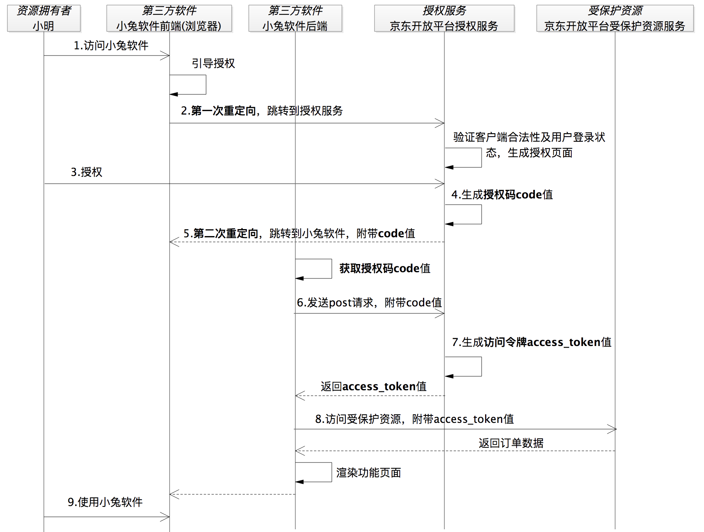
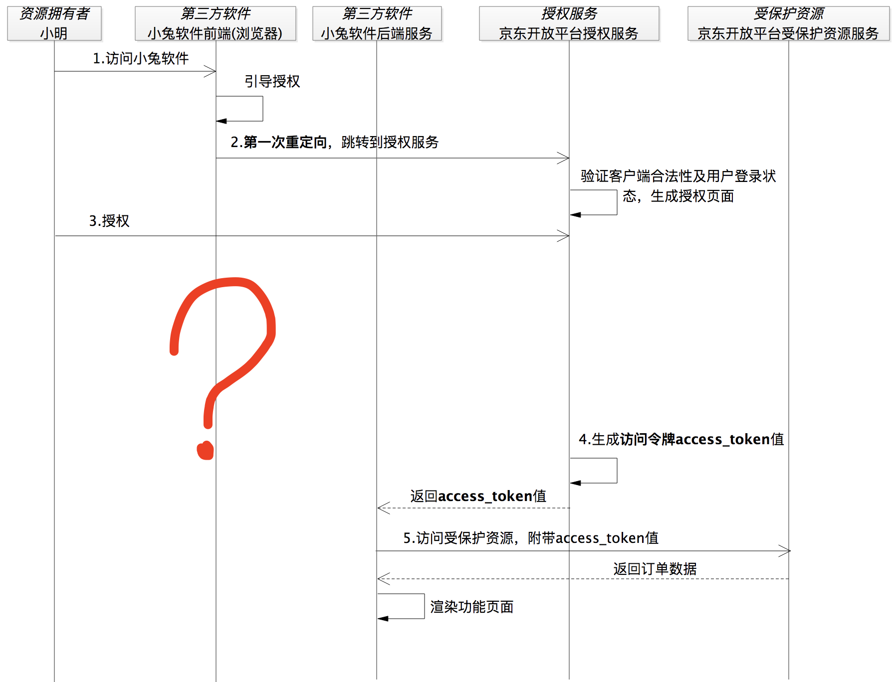

- 00 开篇词 为什么要学OAuth 2.0？.md.html
- 01 OAuth 2.0是要通过什么方式解决什么问题？.md.html
- 02 授权码许可类型中，为什么一定要有授权码？.md.html
- 03 授权服务：授权码和访问令牌的颁发流程是怎样的？.md.html
- 04 在OAuth 2.0中，如何使用JWT结构化令牌？.md.html
- 05 如何安全、快速地接入OAuth 2.0？.md.html
- 06 除了授权码许可类型，OAuth 2.0还支持什么授权流程？.md.html
- 07 如何在移动App中使用OAuth 2.0？.md.html
- 08 实践OAuth 2.0时，使用不当可能会导致哪些安全漏洞？.md.html
- 09 实战：利用OAuth 2.0实现一个OpenID Connect用户身份认证协议..md
- 10 串讲：OAuth 2.0的工作流程与安全问题.md.html
- 11 实战案例：使用Spring Security搭建一套基于JWT的OAuth 2.0架构.md.html
- 12 架构案例：基于OAuth 2.0_JWT的微服务参考架构.md.html
- 13 各大开放平台是如何使用OAuth 2.0的？.md.html
- 14 查漏补缺：OAuth 2.0 常见问题答疑.md.html
- 结束语 把学习当成一种习惯.md.html
- 捐赠
02 授权码许可类型中，为什么一定要有授权码？
你好，我是王新栋。
在上一讲，我提到了 OAuth 2.0 的授权码许可类型，在小兔打单软件的例子里面，小兔最终是通过访问令牌请求到小明的店铺里的订单数据。同时呢，我还提到了，这个访问令牌是通过授权码换来的。到这里估计你会问了，为什么要用授权码来换令牌？为什么不能直接颁发访问令牌呢？
你可以先停下来想想这个问题。今天咱们这节课，我会带着你深入探究下其中的逻辑。
为什么需要授权码？
在讲这个问题之前，我先要和你同步下，在 OAuth 2.0 的体系里面有 4 种角色，按照官方的称呼它们分别是资源拥有者、客户端、授权服务和受保护资源。不过，这里的客户端，我更愿意称其为第三方软件，而且在咱们这个课程中，都是以第三方软件在举例子。所以，在后续的讲解中我统一把它称为第三方软件。
所以，你在看官方资料的时候，可以自己对应下。为了便于你理解，我还是拿小兔软件来举例子，将官方的称呼 “照进现实”，对应关系就是，资源拥有者 -> 小明，第三方软件 -> 小兔软件，授权服务 -> 京东商家开放平台的授权服务，受保护资源 -> 小明店铺在京东上面的订单。
在理解了这些概念以后，让我们继续。
你知道，OAuth 诞生之初就是为了解决 Web 浏览器场景下的授权问题，所以我基于浏览器的场景，在上一讲的小明使用小兔软件打印订单的整体流程的基础上，画了一个授权码许可类型的序列图。
当然了，这里还是有小兔软件来继续陪伴着我们，不过这次为了能够更好地表述授权码许可流程，我会把小兔软件的前端和后端分开展示，并把京东商家开放平台的系统按照 OAuth 2.0 的组件拆分成了授权服务和受保护资源服务。如下图所示：

图1 以小兔软件为例，授权码许可类型的序列图
突然看到这个序列图增加了这么多步骤的时候，你是不是有些紧张？那如果我告诉你再细分的话步骤还要更多，你是不是就更困惑了？
不过，别紧张，这没啥关系。一方面，咱们这一讲的重点就是跟授权码相关的流程，你只需关注这里的重点步骤，也就是两次重定向相关的步骤就够了。在下一讲中，我再教你如何将这些步骤进一步拆解。另一方面，我接下来还会用另一种视角来帮助你分析这个流程。
我们继续来看这张序列图。从图中看到，在第 4 步授权服务生成了授权码 code，按照一开始我们提出来的问题，如果不要授权码，这一步实际上就可以直接返回访问令牌 access_token 了。
按着这个没有授权码的思路继续想，如果这里直接返回访问令牌，那我们肯定不能使用重定向的方式。因为这样会把安全保密性要求极高的访问令牌暴露在浏览器上，从而将会面临访问令牌失窃的安全风险。显然，这是不能被允许的。
也就是说，如果没有授权码的话，我们就只能把访问令牌发送给第三方软件小兔的后端服务。按照这样的逻辑，上面的流程图就会变成下面这样：

图2 如果没有授权码，直接把访问令牌发送给第三方软件小兔的后端服务
到这里，看起来天衣无缝。小明访问小兔软件，小兔软件说要打单你得给我授权，不然京东不干，然后小兔软件就引导小明跳转到了京东的授权服务。到授权服务之后，京东商家开放平台验证了小兔的合法性以及小明的登录状态后，生成了授权页面。紧接着，小明赶紧点击同意授权，这时候，京东商家开放平台知道可以把小明的订单数据给小兔软件。
于是，京东商家开放平台没含糊，赶紧生成访问令牌 access_token，并且通过后端服务的方式返回给了小兔软件。这时候，小兔软件就能正常工作了。
这样，问题就来了，什么问题呢？当小明被浏览器重定向到授权服务上之后，小明跟小兔软件之间的 “连接” 就断了，相当于此时此刻小明跟授权服务建立了“连接”后，将一直“停留在授权服务的页面上”。你会看到图 2 中问号处的时序上，小明再也没有重新“连接”到小兔软件。
但是，这个时候小兔软件已经拿到了小明授权之后的访问令牌，也使用访问令牌获取到了小明店铺里的订单数据。这时，考虑到“小明的感受”，小兔软件应该要通知到小明，但是如何做呢？现在“连接断了”，这事儿恐怕就没那么容易了。
OK，为了让小兔软件能很容易地通知到小明，还必须让小明跟小兔软件重新建立起 “连接”。这就是我们看到的第二次重定向，小明授权之后，又重新重定向回到了小兔软件的地址上，这样小明就跟小兔软件有了新的 “连接”。
到这里，你就能理解在授权码许可的流程中，为什么需要两次重定向了吧。
为了重新建立起这样的一次连接，我们又不能让访问令牌暴露出去，就有了这样一个临时的、间接的凭证：授权码。因为小兔软件最终要拿到的是安全保密性要求极高的访问令牌，并不是授权码，而授权码是可以暴露在浏览器上面的。这样有了授权码的参与，访问令牌可以在后端服务之间传输，同时呢还可以重新建立小明与小兔软件之间的“连接”。这样通过一个授权码，既“照顾”到了小明的体验，又“照顾”了通信的安全。
这下，你就知道为什么要有授权码了吧。
那么，在执行授权码流程的时候，授权码和访问令牌在小兔软件和授权服务之间到底是怎么流转的呢？要回答这个问题，就需要继续分析一下授权码许可类型的通信过程了。
授权码许可类型的通信过程
图 1 的通信过程中标识出来的步骤就有 9 个，一步步地去分析看似会很复杂，所以我会用另一个维度来分析以帮助你理解，也就是从直接通信和间接通信的维度来分析。这里所谓的间接通信就是指获取授权码的交互，而直接通信就是指通过授权码换取访问令牌的交互。
接下来，我们就一起分析下吧，看看哪些是间接通信，哪些又是直接通信。
间接通信
我们先分析下为什么是“间接”。
我们把图 1 中获取授权码 code 的流程 “放大”，并换个角度来看一看，也就是将浏览器这个代理放到第三方软件小兔和授权服务中间。于是，我们来到了下面这张图：
图3 获取授权码的交互过程
这个过程，仿佛有这样的一段对话。
小兔软件：“好的，我把你引到授权服务那里，我需要授权服务给我一个授权码。”
不知道你注意到没有，第三方软件小兔和授权服务之间，并没有发生直接的通信，而是通过浏览器这个“中间人” 来 “搭线”的。因此，我们说这是一个间接通信的方式。
直接通信
那我们再分析下，授权码换取访问令牌的交互，为什么是“直接”的。我们再把图 1 中获取访问令牌的流程“放大”，就得到了下面的图示：
图4 授权码换取访问令牌的交互过程
相比获取授权码过程的间接通信，获取访问令牌的直接通信就比较容易理解了，就是第三方软件小兔获取到授权码 code 值后，向授权服务发起获取访问令牌 access_token 的通信请求。这个请求是第三方软件服务器跟授权服务的服务器之间的通信，都是在后端服务器之间的请求和响应，因此也叫作后端通信。
两个 “一伙”
了解了上面的通信方式之后，不知道你有没有意识到，OAuth 2.0 中的 4 个角色是 “两两站队” 的：资源拥有者和第三方软件“站在一起”，因为第三方软件要代表资源拥有者去访问受保护资源；授权服务和受保护资源“站在一起”，因为授权服务负责颁发访问令牌，受保护资源负责接收并验证访问令牌。
图5 OAuth 2.0 中的4个角色是“两两站队”
讲到这里的时候，你会发现在这一讲，介绍授权码流程的时候我都是以浏览器参与的场景来讲的，那么浏览器一定要参与到这个流程中吗？
其实，授权码许可流程，不一定要有浏览器的参与。接下来，我们就继续分析下其中的逻辑。
一定要有浏览器吗？
OAuth 2.0 发展之初，开放生态环境相对单薄，以浏览器为代理的 Web 应用居多，授权码许可类型 “理所当然” 地被应用到了通过浏览器才能访问的 Web 应用中。
但实际上，OAuth 2.0 是一个授权理念，或者说是一种授权思维。它的授权码模式的思维可以移植到很多场景中，比如微信小程序。在开发微信小程序应用时，我们通过授权码模式获取用户登录信息，官方文档的地址示例中给出的 grant_type=authorization_code ，就没有用到浏览器。
根据微信官方文档描述，开发者获取用户登录态信息的过程正是一个授权码的许可流程：
首先，开发者通过 wx.login(Object object) 方法获取到登录凭证 code 值，这一步的流程是在小程序内部通过调用微信提供的 SDK 实现；
然后，再通过该 code 值换取用户的 session_key 等信息，也就是官方文档的 auth.code2Session 方法，同时该方法也是被强烈建议通过开发者的后端服务来调用的。
你可以看到，这个过程并没有使用到浏览器，但确实按照授权码许可的思想走了一个完整的授权码许可流程。也就是说，先通过小程序前端获取到 code 值，再通过小程序的后端服务使用 code 值换取 session_key 等信息，只不过是访问令牌 access_token 的值被换成了 session_key。
你看，这整个过程体现的就是授权码许可流程的思想。
总结
这节课又接近尾声了，我再带你回顾下重点内容。
今天，我从为什么需要授权码这个问题开始讲起，并通过授权码把授权码许可流程整体的通信过程串了一遍，提到了授权码这种方式解决的问题，也提到了授权码流程的通信方式。总结来说，我需要你记住以下两点。
授权码许可流程有两种通信方式。一种是前端通信，因为它通过浏览器促成了授权码的交互流程，比如京东商家开放平台的授权服务生成授权码发送到浏览器，第三方软件小兔从浏览器获取授权码。正因为获取授权码的时候小兔软件和授权服务并没有发生直接的联系，也叫做间接通信。另外一种是后端通信，在小兔软件获取到授权码之后，在后端服务直接发起换取访问令牌的请求，也叫做直接通信。
在 OAuth 2.0 中，访问令牌被要求有极高的安全保密性，因此我们不能让它暴露在浏览器上面，只能通过第三方软件（比如小兔）的后端服务来获取和使用，以最大限度地保障访问令牌的安全性。正因为访问令牌的这种安全要求特性，当需要前端通信，比如浏览器上面的流转的时候，OAuth 2.0 才又提供了一个临时的凭证：授权码。通过授权码的方式，可以让用户小明在授权服务上给小兔授权之后，还能重新回到小兔的操作页面上。这样，在保障安全性的情况下，提升了小明在小兔上的体验。
从授权码许可流程中就可以看出来，它完美地将 OAuth 2.0 的 4 个角色组织了起来，并保证了它们之间的顺畅通信。它提出的这种结构和思想都可以被迁移到其他环境或者协议上，比如在微信小程序中使用授权码许可。
不过，也正是因为有了授权码的参与，才使得授权码许可要比其他授权许可类型，在授权的流程上多出了好多步骤，让授权码许可类型成为了 OAuth 2.0 体系中迄今流程最完备、安全性最高的授权流程。在接下来的两讲中，我还会为你重点讲解授权码许可类型下的授权服务。
思考题
好了，今天这一讲我们马上要结束了，我给你留个思考题。
关于不需要浏览器参与的授权码许可流程，你还能列举出更多的应用场景吗？
欢迎你在留言区分享你的观点，也欢迎你把今天的内容分享给其他朋友，我们一起交流。
© 2019 - 2023 Liangliang Lee. Powered by gin and hexo-theme-book.